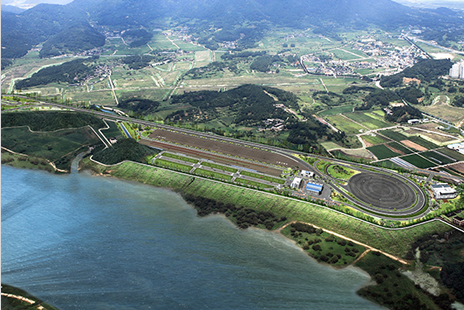

汽车产业
- Home
- 主要产业
- 汽车产业
奠定智能型汽车商用化的研究基础
项目概要
- 项目期 : 2010年6月~2015年2月
- 项目内容 : 奠定基础(配件试验场、汽车配件研究院大庆中心)
技术开发(核心技术、模式与系统)
- 总项目费 : 1,691亿韩元(国家预算968、市政预算475、民资248)
- 项目目标 : 提高技术水平，以增加与先进国的对比值，即65% → 95%
- (ITS 基础，智能型汽车配件试验场) 建立符合国际标准机构(ISO)规格的配件与系统的信誉测试、评估、认证试验场。
- 动工(2010年11月)，2012年完成工程的70%，竣期(2013年2月)

ITS 基础，智能型汽车配件试验场
- 项目期 : 2007年8月～2013年2月
- 位置 : 达城郡 求智面一带
- 规模 : 占地面积 385,000㎡、主要道路178,000㎡
- 总项目费 : 975亿韩元(国费355、市政费用582、民资38)
※ 2012年：155亿韩元(国家预算 70、市政预算80、民资 5)
- (汽车配件研究院大庆中心) 在配件试验场内建设，开发对应世界发展趋势的技术，发挥据点作用(2010年6月~2015年2月，100亿韩元)。
- 设备建设(15种)、困难技术支援、人才培养等
- 研究装备需求调查、设备建设(2012年3~12月)与企业支援
※ 2012年：40亿韩元(国家费用17、市政费用23)
- (技术开发) 结合成车组装企业，促进智能汽车核心要素配件、系统技术等商用化的技术开发(2010年6月~2015年2月，905亿韩元)。
- 推进核心要素技术、模式与系统技术的开发
- 持续课题(12项)与新课题(11项)的评估、选择(2012年4~6月)
※ 2012年：253亿韩元(国家预算195、市政预算58)
构成汽车配件支援体系与技术开发
- (战略产业的振兴) 建立汽车配件开发支援中心(2009~2012年，78亿韩元)，以开发模式电装配件和支援试验、信誉评估。
- 设备建设、公共技术开发和困难技术的支援等
※ 2012年：11.6亿韩元(国家预算5、市政预算6.5、民资0.1) - 为开发未来汽车产业的核心—电子化配件与培养人才，支援运营电子化汽车配件RIC(2006~2016年，191亿韩元，启明大学)。
- 汽车 ECU*的开发与电子化汽车配件的研究开发
※ Electronic Control Unit：通过计算机来控制引擎、自动变速档、ABS等状况的电子控制设备。
※ 2012年：18.4亿韩元(国家预算7、市预算1.4、民资10.4) - 汽车 ECU*的开发与电子化汽车配件的研究开发
- 为对应环保高效率绿色汽车的模式变化，开发智能环保车—动力火车配件(2011年~2015年，385亿韩元)。
- 三项核心配件基础技术开发、特色中心(建筑面积5,135㎡)与设备建设
※ 2012年：132.5亿韩元(国家预算101、市预算24、民资7.5) - 广域经济圈联合、合作项目，即推进大庆新一代汽车配件开发与企业支援项目(2010~2013年，135亿韩元)
- 研究开发(4项)、中小企业符合型支援(产品商用化、困难技术、市场等)
※ 2012年：40.7亿韩元(国家预算22、市政费用3.4、庆北6.6、民资8.7)
示范运营绿色环保车
- 示范运营燃料费少、二氧化碳排放量低的混合动力公交车(两台)，以组建绿色增长的先进城市。
- EXCO~东大邱站~半月堂(8班/天)、达城第2产业园区~大谷站(4班/天)
- 作为搞活电力车产业方案的后续措施，设置对已出库的电力车(Blue On)的实际道路实施监控的设施(一台)